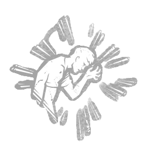

精神粉碎 Mindbreaker
所属：俄摩拉虫（杀手）
| 等级 | 档位 1 | 档位 2 | 档位 3 |
|---|---|---|---|
| 数值 | 3 1 | 4 | 5 |
描述
"你令人不安的存在感会榨干并削弱你的猎物。"修理发电机时，会受到 失明 与 疲惫 状态效果影响。结束互动后，两种状态效果仍会持续 3/4/5 秒。碎心者 无法覆盖已存在的 疲惫 状态效果，但会暂停其计时器。"该样本所展现的心灵感应能力，可在附近个体中唤起恐惧和疲惫之感。" ——霍金斯国家实验室

所属：俄摩拉虫（杀手）
| 等级 | 档位 1 | 档位 2 | 档位 3 |
|---|---|---|---|
| 数值 | 3 1 | 4 | 5 |
"你令人不安的存在感会榨干并削弱你的猎物。"修理发电机时，会受到 失明 与 疲惫 状态效果影响。结束互动后，两种状态效果仍会持续 3/4/5 秒。碎心者 无法覆盖已存在的 疲惫 状态效果，但会暂停其计时器。"该样本所展现的心灵感应能力，可在附近个体中唤起恐惧和疲惫之感。" ——霍金斯国家实验室